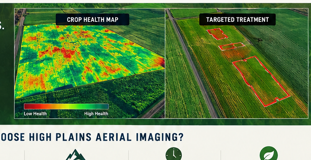

FIELD INTELLIGENCE
Find patterns that deserve a closer look.
Aerial imagery can help visualize differences across a field and guide where boots-on-the-ground scouting should happen. Depending on the sensor and project, imagery may support observations about crop vigor, variability, water stress indicators and other field conditions.

Crop Stress
Identify areas that appear different from surrounding crop and prioritize them for investigation.
Field Variability
Create a visual record of differences across a field.
Repeat Monitoring
Capture imagery at different times to compare changing field conditions.
Before & After
Document conditions around a treatment or management change.
See It. Treat It. Verify It.
Pair aerial crop-health information with agricultural drone services for a complete field-support workflow.